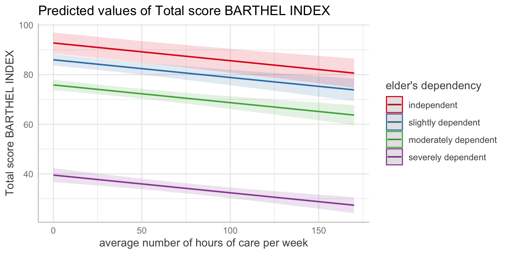
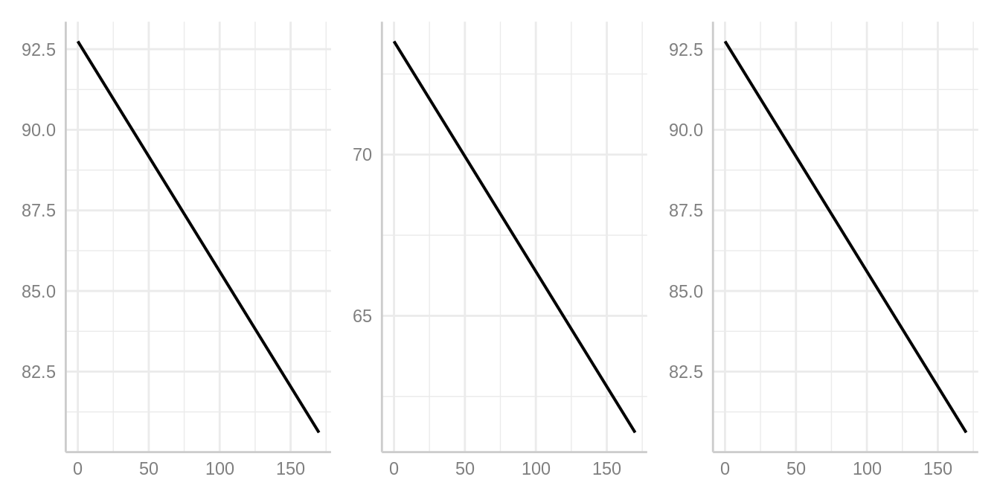

Technical Details: Difference between ggpredict() and ggemmeans()
Daniel Lüdecke
2023-09-03
Source:vignettes/technical_differencepredictemmeans.Rmd
technical_differencepredictemmeans.Rmdggpredict() and ggemmeans() compute
predicted values for all possible levels or values from a model’s
predictor. Basically, ggpredict() wraps the
predict()-method for the related model, while
ggemmeans() wraps the emmeans()-method from
the emmeans-package. Both ggpredict() and
ggemmeans() do some data-preparation to bring the data in
shape for the newdata-argument (predict())
resp. the at-argument (emmeans()). It is
recommended to read the general
introduction first, if you haven’t done this yet.
Thus, effects returned by ggpredict() conditional
effects (i.e. these are conditioned on certain (reference) levels
of factors), while ggemmeans() returns marginal
means, since the effects are “marginalized” (or “averaged”) over
the levels of factors. However, these differences only
apply to non-focal terms, i.e. remaining variables that
are not specified in the terms
argument.
That means:
For models without categorical predictors, the results from
ggpredict()andggemmeans()are identical (except some slight differences in the associated confidence intervals, which are, however, negligible).When all categorical predictors are specified in
termsand further (non-focal) terms are only numeric, results are also identical (as bothggpredict()andggemmeans()use the mean value by default to hold non-focal numeric variables constant).
library(magrittr)
library(ggeffects)
data(efc)
fit <- lm(barthtot ~ c12hour + neg_c_7, data = efc)
ggpredict(fit, terms = "c12hour")
#> # Predicted values of Total score BARTHEL INDEX
#>
#> c12hour | Predicted | 95% CI
#> ------------------------------------
#> 0 | 75.07 | [72.96, 77.19]
#> 20 | 70.15 | [68.40, 71.91]
#> 45 | 64.01 | [62.40, 65.61]
#> 65 | 59.09 | [57.32, 60.86]
#> 85 | 54.17 | [52.04, 56.31]
#> 105 | 49.25 | [46.64, 51.87]
#> 125 | 44.34 | [41.18, 47.49]
#> 170 | 33.27 | [28.78, 37.76]
#>
#> Adjusted for:
#> * neg_c_7 = 11.83
ggemmeans(fit, terms = "c12hour")
#> # Predicted values of Total score BARTHEL INDEX
#>
#> c12hour | Predicted | 95% CI
#> ------------------------------------
#> 0 | 75.07 | [72.96, 77.19]
#> 20 | 70.15 | [68.40, 71.91]
#> 45 | 64.01 | [62.40, 65.61]
#> 65 | 59.09 | [57.32, 60.86]
#> 85 | 54.17 | [52.04, 56.31]
#> 105 | 49.25 | [46.64, 51.87]
#> 125 | 44.34 | [41.18, 47.49]
#> 170 | 33.27 | [28.78, 37.76]
#>
#> Adjusted for:
#> * neg_c_7 = 11.83As can be seen, the continuous predictor neg_c_7 is held
constant at its mean value, 11.83. For categorical predictors,
ggpredict() and ggemmeans() behave
differently. While ggpredict() uses the reference level of
each categorical predictor to hold it constant, ggemmeans()
- like ggeffect() - averages over the proportions of the
categories of factors.
library(sjmisc)
data(efc)
efc$e42dep <- to_label(efc$e42dep)
fit <- lm(barthtot ~ c12hour + neg_c_7 + e42dep, data = efc)
ggpredict(fit, terms = "c12hour")
#> # Predicted values of Total score BARTHEL INDEX
#>
#> c12hour | Predicted | 95% CI
#> ------------------------------------
#> 0 | 92.74 | [88.48, 97.01]
#> 20 | 91.32 | [87.06, 95.57]
#> 45 | 89.53 | [85.20, 93.87]
#> 65 | 88.10 | [83.64, 92.57]
#> 85 | 86.68 | [82.03, 91.32]
#> 105 | 85.25 | [80.37, 90.13]
#> 125 | 83.82 | [78.67, 88.98]
#> 170 | 80.61 | [74.71, 86.51]
#>
#> Adjusted for:
#> * neg_c_7 = 11.83
#> * e42dep = independent
ggemmeans(fit, terms = "c12hour")
#> # Predicted values of Total score BARTHEL INDEX
#>
#> c12hour | Predicted | 95% CI
#> ------------------------------------
#> 0 | 73.51 | [71.85, 75.18]
#> 20 | 72.09 | [70.65, 73.53]
#> 45 | 70.30 | [68.89, 71.71]
#> 65 | 68.87 | [67.29, 70.46]
#> 85 | 67.45 | [65.55, 69.34]
#> 105 | 66.02 | [63.74, 68.30]
#> 125 | 64.59 | [61.88, 67.31]
#> 170 | 61.38 | [57.61, 65.15]
#>
#> Adjusted for:
#> * neg_c_7 = 11.83In this case, one would obtain the same results for
ggpredict() and ggemmeans() again, if
condition is used to define specific levels at which
variables, in our case the factor e42dep, should be held
constant.
ggpredict(fit, terms = "c12hour")
#> # Predicted values of Total score BARTHEL INDEX
#>
#> c12hour | Predicted | 95% CI
#> ------------------------------------
#> 0 | 92.74 | [88.48, 97.01]
#> 20 | 91.32 | [87.06, 95.57]
#> 45 | 89.53 | [85.20, 93.87]
#> 65 | 88.10 | [83.64, 92.57]
#> 85 | 86.68 | [82.03, 91.32]
#> 105 | 85.25 | [80.37, 90.13]
#> 125 | 83.82 | [78.67, 88.98]
#> 170 | 80.61 | [74.71, 86.51]
#>
#> Adjusted for:
#> * neg_c_7 = 11.83
#> * e42dep = independent
ggemmeans(fit, terms = "c12hour", condition = c(e42dep = "independent"))
#> # Predicted values of Total score BARTHEL INDEX
#>
#> c12hour | Predicted | 95% CI
#> ------------------------------------
#> 0 | 92.74 | [88.48, 97.01]
#> 20 | 91.32 | [87.06, 95.57]
#> 45 | 89.53 | [85.20, 93.87]
#> 65 | 88.10 | [83.64, 92.57]
#> 85 | 86.68 | [82.03, 91.32]
#> 105 | 85.25 | [80.37, 90.13]
#> 125 | 83.82 | [78.67, 88.98]
#> 170 | 80.61 | [74.71, 86.51]
#>
#> Adjusted for:
#> * neg_c_7 = 11.83Creating plots is as simple as described in the vignette Plotting Marginal Effects.

But when should I use ggemmeans() and when
ggpredict()?
When you are interested in the strength of association, it usually
doesn’t matter. as you can see in the plots below. The slope of our
focal term, c12hour, is the same for all three plots:
library(see)
p1 <- plot(ggpredict(fit, terms = "c12hour"), ci = FALSE, show.title = FALSE, show.x.title = FALSE, show.y.title = FALSE)
p2 <- plot(ggemmeans(fit, terms = "c12hour"), ci = FALSE, show.title = FALSE, show.x.title = FALSE, show.y.title = FALSE)
p3 <- plot(ggemmeans(fit, terms = "c12hour", condition = c(e42dep = "independent")), ci = FALSE, show.title = FALSE, show.x.title = FALSE, show.y.title = FALSE)
plots(p1, p2, p3, n_rows = 1)
However, the predicted outcome varies. This gives an impression when
ggemmeans(), i.e. marginal effects, matter: when
you want to predict your outcome, marginalized over the different levels
of factors, i.e. “generalized” to the population (of your sample).
ggpredict() would give a predicted outcome for a
subgroup of your sample, i.e. conditioned on specific levels of
factors. Hence, the predicted outcome from ggpredict() does
not necessarily generalize to the “population” (always keeping in mind
that we assume having a “representative sample” of a “population” as
data in our model).
But why should I use ggpredict()
anymore?
Some models are not yet supported by the emmeans
package, thus, for certain models, only ggpredict() works,
not ggemmeans() nor ggeffect(). Sometimes,
robust variance-covariance estimation is required for confidence
intervals of predictions. In such cases, you have to rely on
ggpredict(). If you have no categorical predictors as
non-focal terms (i.e. no factor needs to be held constant), then - as
shown above - ggpredict() and ggemmeans()
yield the same results.